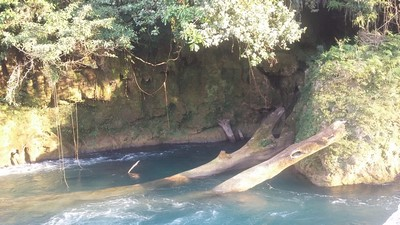
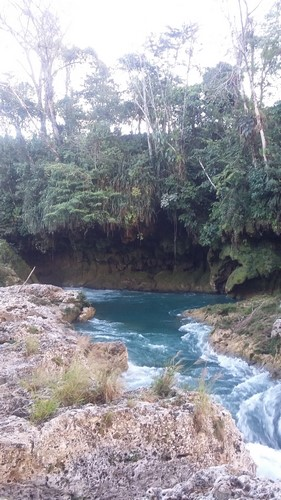
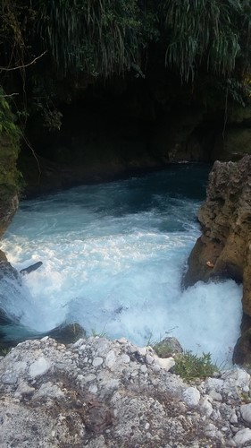
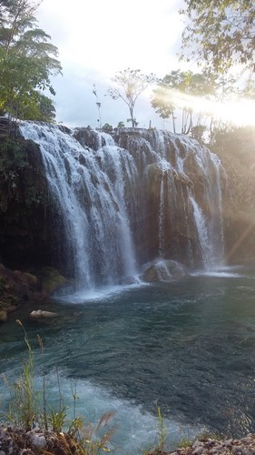
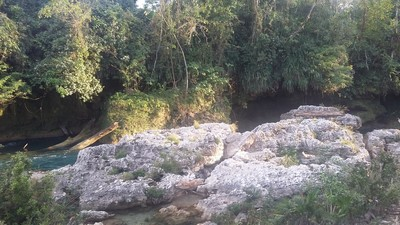

Rio que se encuentra en la colonia Xanil. En el Municipio de Chilón
El color es maravilloso, tiene tonos azules, verdes y esmeraldas en sus aguas
Dependiendo de la profundidad, presenta corrientes que alcanza los 1000 m3/s, escenario digno de los deportes extremos.
Se localiza en el municipio de Chilón, a 1 hora de la ciudad de Yajalón.
Partiendo de Yajalón se toma la carretera a Ocosingo, llegando a Temo se debe tomar la carretera a Palenque (federal 199).
A 58 Km aparece, a mano izquierda, un letrero que indica el nombre del lugar.
En el lugar usted puede practicar actividades de esparcimientos como:
---Balneario---
---Fotografía---
---Picnic---
---Contemplación de paisaje---





Posicione el mouse sobre las imágenes